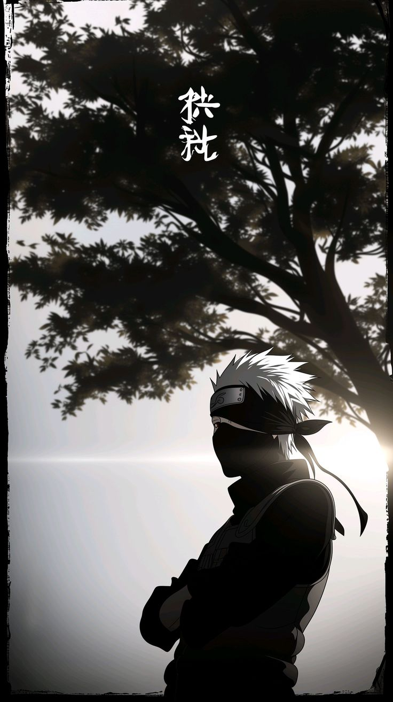

Hatake Kakashi
This piece captures Kakashi Hatake not merely as a formidable ninja, but as a tragic, deeply contemplative figure existing in the quiet spaces between conflict. The artwork relies heavily on a monochromatic, high-contrast aesthetic to translate internal emotional complexity into a physical landscape.
🌓 The Mastery of Chiaroscuro and Negative Space
The composition thrives on a bold push-and-pull between light and darkness. By casting Kakashi almost entirely in shadow, the artist leans into the classical technique of chiaroscuro—using strong tonal contrasts to suggest volume and introduce a theatrical, psychological tension.
The Silhouette as a Mask: The deep blackness of his silhouette echoes his actual mask, reinforcing the theme of hidden identity, suppressed trauma, and emotional detachment.
The Halo Effect: The brilliant, washed-out backlighting catches only the sharpest edges of his form—the spiky crest of his hair and the flowing ties of his forehead protector—making him appear grounded yet fundamentally detached from the world behind him.
Vast Mist: The expansive, empty gray of the horizon acts as a visual vacuum, emphasizing a profound sense of isolation and the vast, open-ended burden of his past.
🍃 Organic Framing and Traditional Motifs
The placement of the tree branches is crucial to the artwork's poetic gravity, drawing inspiration from traditional Asian landscape ink paintings (Sumi-e).
The Framing Arch: Rather than a simple background element, the sprawling, dark canopy arches overhead like a protective or oppressive weight, grounding the character within nature.
The Textured Leaves: The delicate, jagged edges of the leaves mirror the sharp lines of Kakashi's hair, creating a rhythmic continuity between the subject and the natural environment.
Calligraphic Balance: The stark white vertical text placed amidst the branches breaks the horizontal vastness of the sky, acting as a visual anchor that balances the weight of the dark tree on the right.
🌧 Psychological Atmosphere and Narrative Depth
Artistically, the image functions as a visual poem about grief and resilience.
The Weight of Posture: With arms crossed tightly over his chest and his head subtly bowed, his posture is defensive yet weary. It speaks of a lifetime of loss—friends, mentors, and family—and the quiet strength required to carry that sorrow alone.
The Liminal Light: The horizon lines bleed into a soft, hazy fog, suggesting either a cold dawn or a fading twilight.
This choice of light places Kakashi in a "liminal" space—a transitional threshold between night and day, life and death, past and future. It captures a rare, stolen moment of absolute stillness in an otherwise chaotic existence.